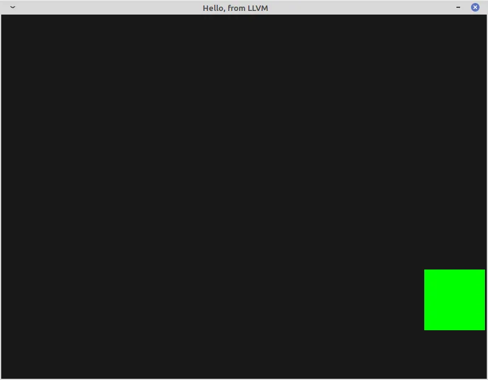

- Role
- Author, learning in public
- When
- Aug 2024
- Stack
- LLVM IR, clang, raylib 5.0
What it is
LLVM IR is meant to be written by compilers, not people. These are my notes from writing it by hand: hello.ll calls printf, loop.ll is a for loop as basic blocks, and game.ll opens an 800×600 window and bounces a green square. Clang compiles the .ll file directly and links raylib statically.


Code
A for loop, as basic blocks:
%4 = load i32, i32* %2
; %5 <= int_cmp: %4 < 10
; slt = SIGNED less than
%5 = icmp slt i32 %4, 10
; %5 has type i1 <- int 1 bit
; branch to 6 if %5 else 11
br i1 %5, label %6, label %11Bouncing off a wall: flip the velocity by subtracting it from zero.
update_dp:
%ldp = load i32, i32* %dp
; clever
%neg_dp = sub nuw i32 0, %ldp
store i32 %neg_dp, i32* %dp
ret voidHistory
- 7 Aug 2024Repository created.
- 8 Aug 2024The notes, the three .ll files and screenshots.
Thanks to Tsoding for the stream, to raylib for the API, and to vim-llvm for the highlighting.